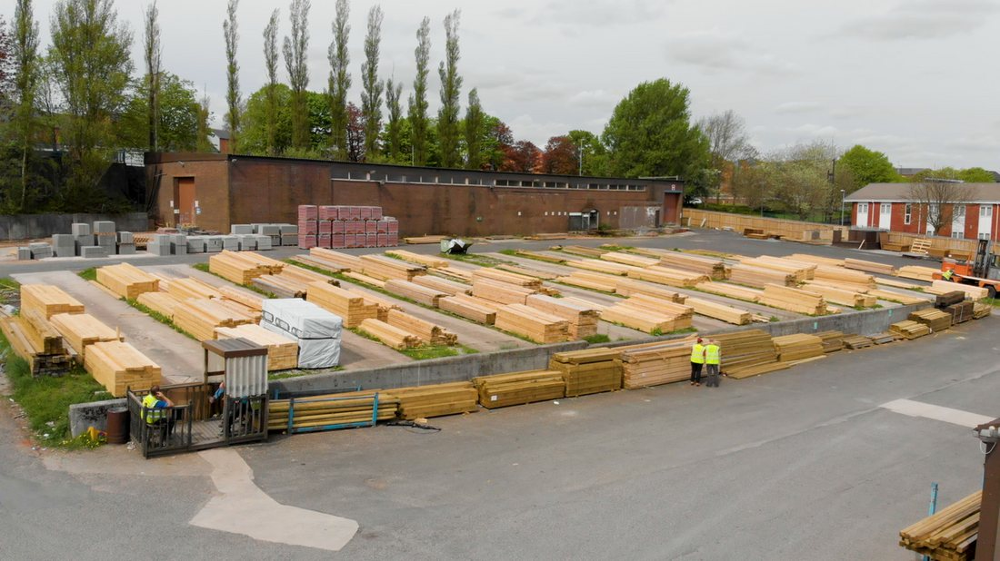
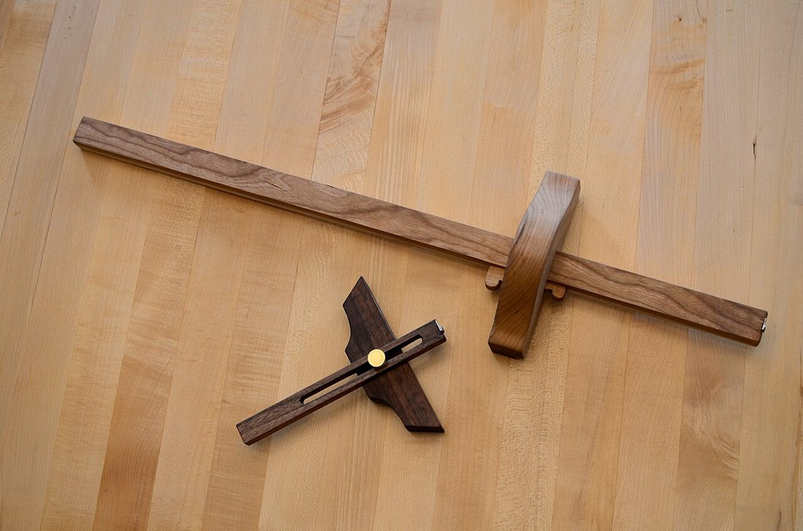
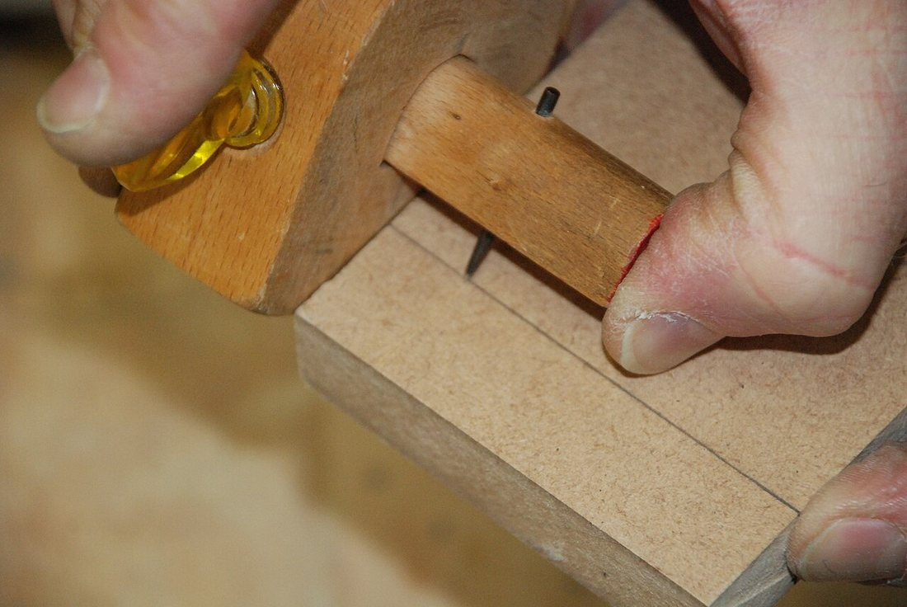
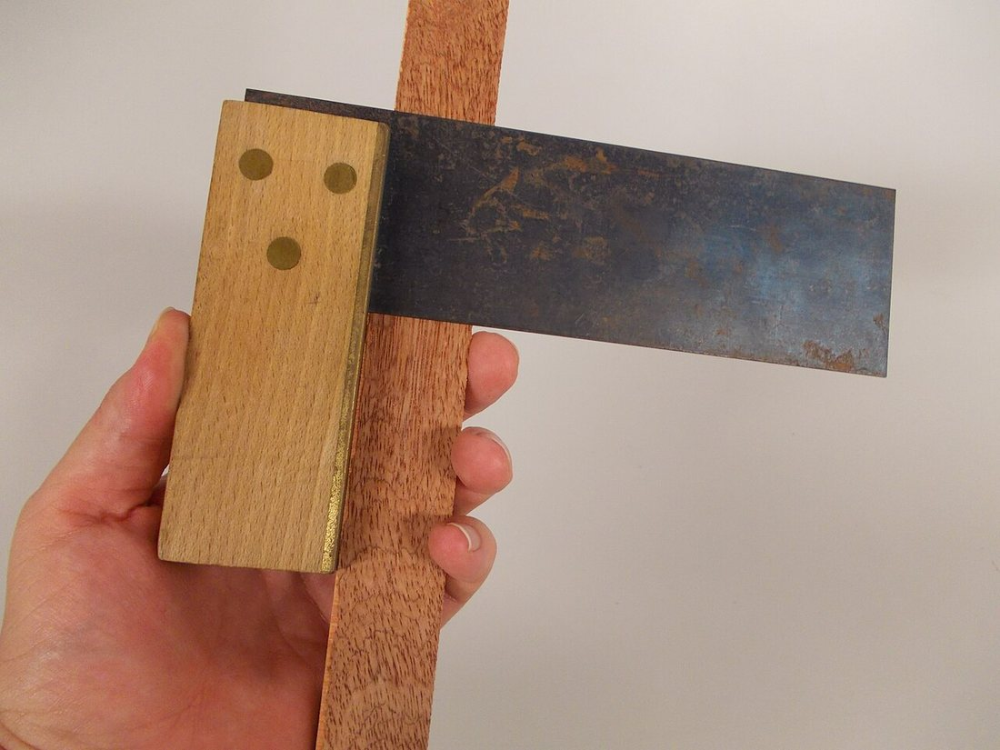

Көркем еңбек (ұлдар) · 2-бөлім · Ағаш өңдеу Art & Craft (Boys) · Section 2 · Woodworking Художественный труд (мальчики) · Раздел 2 · Обработка древесины
Кесінді материал және дайындаманы белгілеу
Timber and Marking the Workpiece
Пиломатериалы и разметка заготовки
Ағаштың сұрыпталған түрлері, олардың өлшемдері және дайындаманы дәл әрі үнемді белгілеу. Grades of sawn wood, their sizes, and how to mark a workpiece accurately and without waste. Сортовые виды распиленной древесины, их размеры и точная безотходная разметка заготовки.
Кесінді материал дегеніміз не? What are timber materials? Что такое пиломатериалы?
Кесінді материал (пиломатериал) — бөренені бойлай аралап кескеннен алынатын ағаш бұйымдары: тақтай, брус, брусок, рейка. Олардың кемінде екі жазық беті болады. Ара зауытында (лесопилка) бөрене станокта тілінеді, содан кейін материал сұрыпталады және кептіріледі. Дайындама дұрыс таңдалса, бұйым берік әрі әдемі шығады, ал ағаш үнемделеді.
Timber (sawn lumber) is wood produced by sawing a log lengthwise: boards, beams, battens and slats. Each piece has at least two flat sawn faces. At the sawmill the log is cut on a machine, then the material is graded and dried. Choosing the right workpiece makes the product strong and handsome — and saves wood.
Пиломатериалы — это древесина, полученная распиловкой бревна вдоль волокон: доски, брус, бруски, рейки. Каждый такой материал имеет не менее двух плоских пропиленных сторон. На лесопилке бревно распускают на станке, затем материал сортируют и сушат. Правильно выбранная заготовка делает изделие прочным и красивым, а древесину — расходуемой экономно.
Маңызды: дайындама — болашақ бұйымның бөлшегі әзірленетін материал кесіндісі. Жұмысты бастамас бұрын оны өлшеп, белгілеу керек.
Key term: a workpiece (заготовка) is the piece of material from which a part of the future product will be made. Before any cutting it must be measured and marked.
Ключевой термин: заготовка — это кусок материала, из которого будет изготовлена деталь будущего изделия. Перед обработкой её обязательно измеряют и размечают.
Кесінді материалдың түрлері Main kinds of timber Основные виды пиломатериалов
Қалыңдығы мен ені 100 мм-ден асатын ірі материал. Каркас, баспалдақ, ауыр құрылым үшін. A thick piece over 100 mm on both sides. Used for frames, stairs and heavy structures. Крупный материал толщиной и шириной более 100 мм. Для каркасов, лестниц, тяжёлых конструкций.
Кіші брус: ені қалыңдығынан екі еседен аспайды. Жиһаз бен ұсақ бұйым үшін ыңғайлы. A small beam: width is no more than twice its thickness. Handy for furniture and small parts. Малый брус: ширина не более чем вдвое больше толщины. Удобен для мебели и мелких деталей.
Жалпақ материал: ені қалыңдығынан екі еседен артық. Ең көп қолданылатын түрі. A flat piece whose width is more than twice its thickness. The most widely used kind. Плоский материал: ширина более чем вдвое превышает толщину. Самый распространённый вид.
Тақтайдан тілінген жіңішке планка. Жақтау, тор, ұсақ әрлеу жұмыстарына. A thin strip ripped from a board. For frames, lattices and fine finishing work. Тонкая планка, выпиленная из доски. Для рамок, решёток, мелких отделочных работ.
Бөренені аралағанда бір беті дөңгелек болып қалатын шеткі бөлік. Көмекші материал. The outer off-cut left when sawing a log; one side keeps the round bark. An auxiliary material. Крайняя часть бревна с одной выпуклой стороной, остающаяся при распиловке. Вспомогательный материал.
Жұқа ағаш қабаттарынан желімдеп жасалған парақ материал — берік әрі бұралмайды. Sheet material glued from thin layers of wood — strong and resistant to warping. Листовой материал, склеенный из тонких слоёв древесины — прочный и не коробится.
Нақты фотосуреттер Real photographs Реальные фотографии
Үлкейту үшін суретті басыңыз. Click a photo to enlarge it. Нажмите на фото, чтобы увеличить.




Кесінді материалдарды салыстыру Comparison of timber materials Сравнение пиломатериалов
| Материал | Сечение / форма | Где применяют |
|---|---|---|
| Брус | квадрат, ≥ 100×100 мм | каркасы, балки, лестницы |
| Брусок | малое сечение, < 100 мм | мебель, рамки, мелкие детали |
| Доска | широкая и плоская | столешницы, полки, обшивка |
| Рейка | тонкая узкая планка | решётки, штапики, отделка |
| Горбыль | одна сторона выпуклая | опалубка, временные настилы |
| Фанера | лист из слоёв шпона | задние стенки, днища, макеты |
| Материал | Қимасы / пішіні | Қолданылуы |
|---|---|---|
| Брус | шаршы, ≥ 100×100 мм | каркас, арқалық, баспалдақ |
| Брусок | кіші қима, < 100 мм | жиһаз, жақтау, ұсақ бөлшек |
| Тақтай | жалпақ әрі жұқа | үстел беті, сөре, қаптама |
| Рейка | жіңішке жұқа планка | тор, штапик, әрлеу |
| Горбыль | бір беті дөңес | қалып, уақытша төсем |
| Фанера | шпон қабаттарынан парақ | артқы қабырға, түп, макет |
| Material | Section / shape | Where it is used |
|---|---|---|
| Beam (brus) | square, ≥ 100×100 mm | frames, joists, stairs |
| Batten (brusok) | small section, < 100 mm | furniture, frames, small parts |
| Board (doska) | wide and flat | tops, shelves, cladding |
| Slat (reika) | thin narrow strip | lattices, beadings, finishing |
| Slab (gorbyl) | one rounded face | formwork, temporary decking |
| Plywood | sheet of veneer layers | back panels, bottoms, models |
Дайындаманы белгілеу реті How to mark a workpiece, step by step Порядок разметки заготовки
«Жеті рет өлше, бір рет кес» — белгілеу дәлдігі бұйым сапасын анықтайды. "Measure seven times, cut once" — the accuracy of marking decides the quality of the part. «Семь раз отмерь — один раз отрежь»: точность разметки определяет качество детали.
Белгілеу аспаптары Marking tools Разметочные инструменты
Бұрыш тік бұрышты тексереді, рейсмус параллель сызық салады, циркуль доға мен шеңбер сызады. Бірдей бөлшектер көп болса — шаблон қолданған тиімді. The try square checks right angles, the gauge draws parallel lines, the compass strikes arcs and circles. For many identical parts a template is the fastest tool. Угольник проверяет прямой угол, рейсмус ведёт параллельные линии, циркуль чертит дуги и окружности. Для множества одинаковых деталей удобнее всего шаблон.
Қателіктерден сақтан Avoid these mistakes Избегай ошибок
- ✗ Базалық шетсіз белгілеу — өлшемдер «жылжып» кетеді.Marking without a base edge — sizes drift apart.Разметка без базовой кромки — размеры «уплывают».
- ✗ Жуан, доғал қарындаш — сызық қалың, дәлдік жоғалады.A thick, blunt pencil — the line is fat and precision is lost.Толстый тупой карандаш — линия жирная, точность теряется.
- ✗ Бұрышты қисайтып ұстау — 90° бұзылады.Tilting the square — the 90° angle is spoiled.Перекос угольника — нарушается угол 90°.
- ✓ Кескенге дейін екі рет өлшеп тексер.Measure twice before you cut.Дважды проверь размер перед резом.